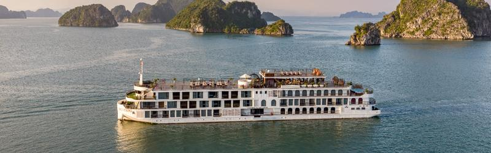
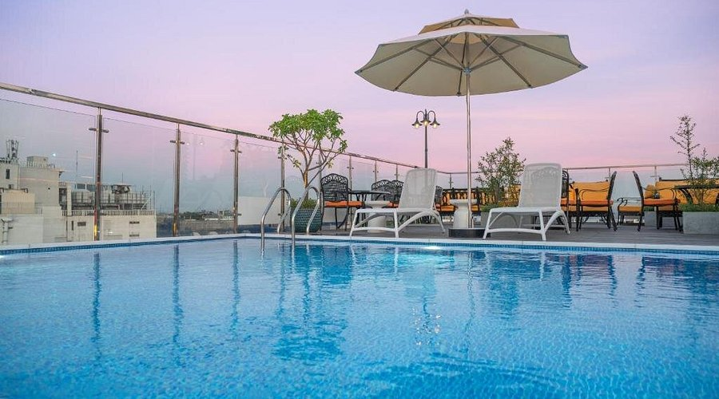
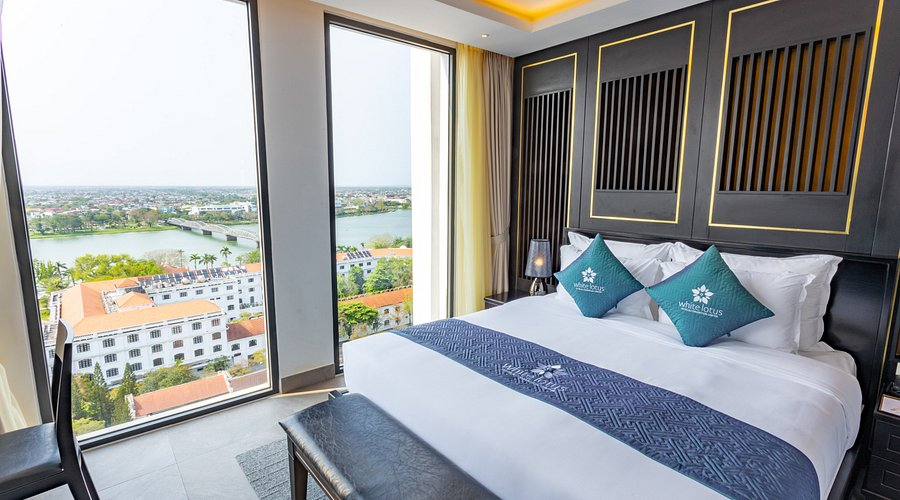
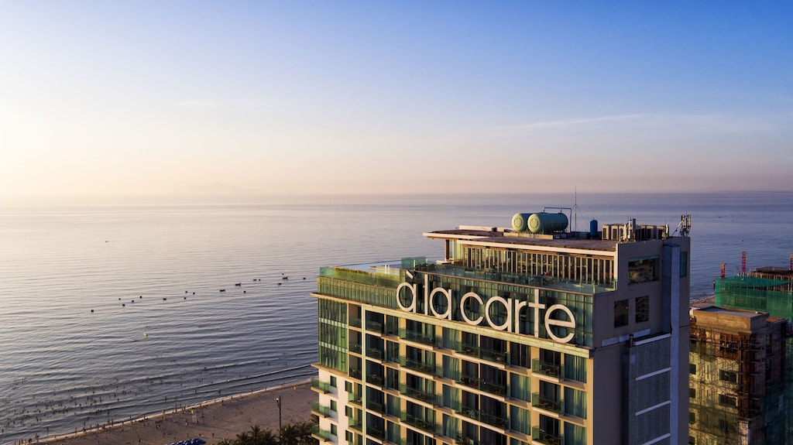
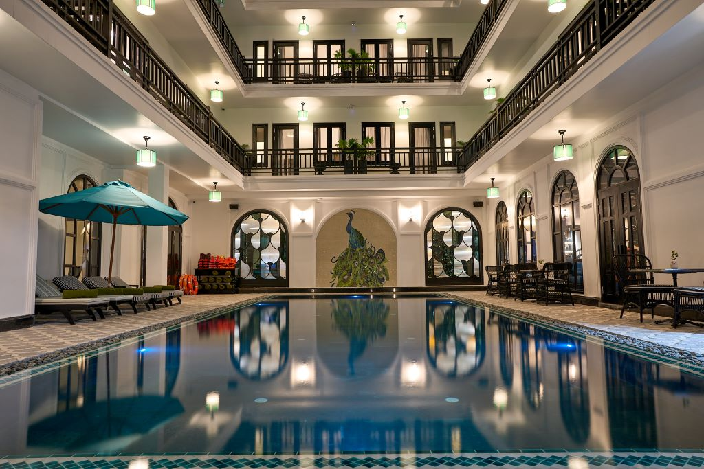
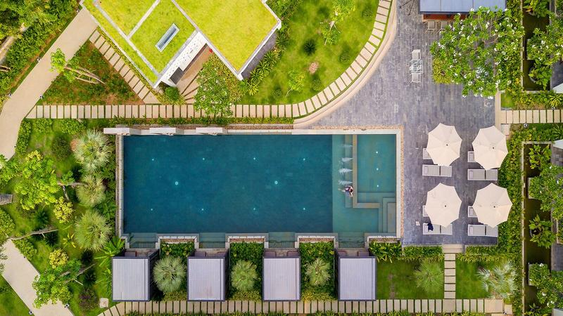

Viaje conmigo · Salida grupal en español
Catorce días por lo mejor del Sudeste Asiático, en grupos pequeños y 100% en español. De los callejones de Hanói al amanecer en Angkor Wat, con todo resuelto para que tú solo te dediques a vivirlo.
Este es el viaje que yo le haría a alguien que quiero: hoteles seleccionados uno a uno, un crucero de lujo entre los islotes de la Bahía de Halong, clase de cocina en Hoi An y guía local en español en cada parada. Nada de improvisar — nosotros nos encargamos de la logística, tú de los recuerdos.
Casco antiguo, templo de la Literatura, café vietnamita y el caos hermoso de sus calles. Primer contacto con Asia, acompañado.
Navegación entre miles de islotes de piedra caliza a bordo de un crucero de lujo. Kayak, cuevas y una de las puestas de sol más icónicas del planeta.
La antigua capital imperial: la Ciudadela, las tumbas reales y la historia viva del país a orillas del Río de los Perfumes.
El famoso Puente Dorado sostenido por dos manos gigantes y sesión de fotografía profesional incluida.
Casco antiguo Patrimonio de la Humanidad, faroles de colores al anochecer y una clase de cocina vietnamita para llevarte Asia en el paladar.
Amanecer en Angkor Wat, los rostros de Bayón, el templo-jungla de Ta Prohm, Banteay Srei y la vida flotante del Lago Tonle Sap.
Hoteles 4-5★ seleccionados uno a uno en cada parada del itinerario. Estos son algunos de los alojamientos del viaje:





Te ayudamos con todo: vuelos, visados y seguro. Aunque no estén incluidos, no te dejamos solo en el proceso.
Tus fechas. Tu grupo. Tu ritmo.
Si quieres viajar solo con tu grupo y en tus propias fechas, lo diseñamos a tu medida desde 5 personas.
Ver viaje privado